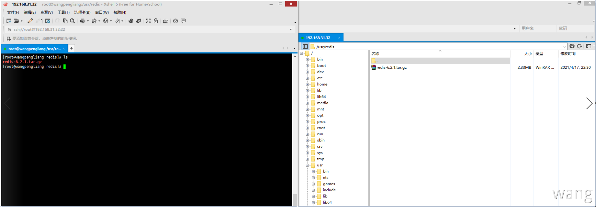
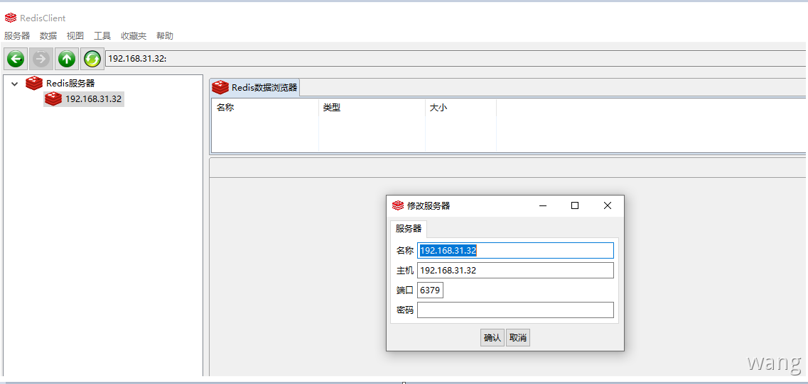
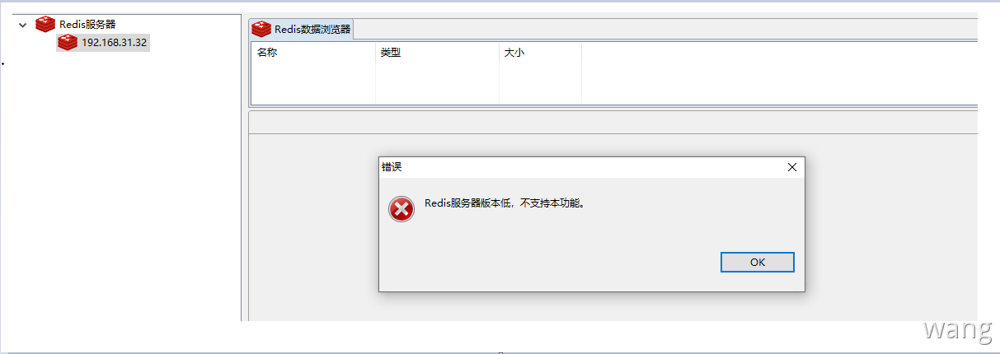
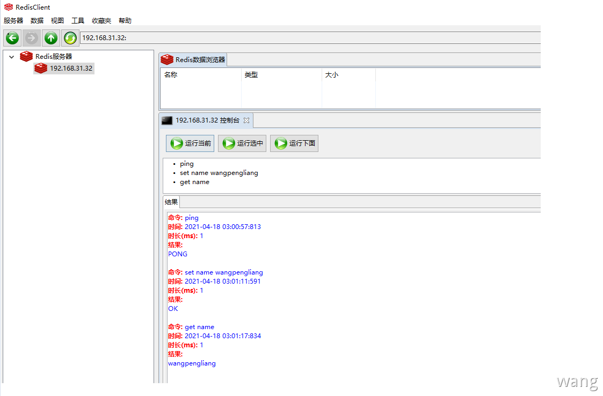

下载安装包
Redis（Remote Dictionary Server )，即远程字典服务，是一个开源的使用 ANSI C 语言编写、支持网络、可基于内存亦可持久化的日志型、Key-Value数据库，并提供多种语言的API。
Redis 是没有 Windows 平台下的官方支持版本的。Redis 官方不建议在 Windows 下使用，所以官网没有 Windows 版本可以下载；可以下载在 github 上的ServiceStack 提供的非官方 Windows 版本的 Redis 但不推荐，因为：
该版本并不是官方支持的，缺少官方支持在使用上可能会出现很多问题
Redis的最新版本与 Windows 版本不同步，Redis官网版本早于Redis中文网
所以不考虑Windows下版本安装，直接选择Linux下版本安装
Linux安装程序分为两种
如果是手动下载，需要将文件上传到Linux系统中

解压文件
1 tar -xvf Redis-6.2.1.tar.gz
Redis是C语言开发，安装Redis需要先将Redis的源码进行编译，编译依赖gcc环境。因此需要安装gcc，安装过程中有提示时，输入Y即可。（make命令必须在Redis解压后的程序目录下执行）
Centos7安装有默认gcc环境，默认4.8.5版本！编译 Redis-6.x，要求 gcc5.3以上 编译器，否则会遇到大量的错误。主要原因是从 Redis-6.x 开始的多线程代码依赖C标准库中的新增类型 _Atomic 。但注意 gcc 从 4.9 版本才开始正式和完整地支持 stdatomic（gcc-4.8.5 部分支持）。Centos7默认的 gcc 版本为：4.8.5 < 5.3 无法编译
Gcc升级
参考 ：Centos7升级gcc版本
查看gcc版本
1 [root@wangpengliang Redis]
编译Redis
进入 Redis 程序目录
1 cd /usr/Redis/Redis-6.2.1
Make：下载环境并编译 Redis 程序
1 2 3 [root@localhost Redis-6.2.1] 或者（推荐） [root@localhost Redis-6.2.1]
安装完成查看文件列表
1 2 3 4 5 6 7 8 9 10 11 [root@wangpengliang bin] [root@wangpengliang bin] Redis-benchmark Redis-check-aof Redis-check-rdb Redis-cli Redis-sentinel Redis-server [root@wangpengliang bin] 总用量 21940 -rwxr-xr-x. 1 root root 5675824 4月 18 01:32 Redis-benchmark lrwxrwxrwx. 1 root root 12 4月 18 01:32 Redis-check-aof -> Redis-server lrwxrwxrwx. 1 root root 12 4月 18 01:32 Redis-check-rdb -> Redis-server -rwxr-xr-x. 1 root root 5881760 4月 18 01:32 Redis-cli lrwxrwxrwx. 1 root root 12 4月 18 01:32 Redis-sentinel -> Redis-server -rwxr-xr-x. 1 root root 10904032 4月 18 01:32 Redis-server
配置Redis
复制 Redis 核心配置文件，文件在安装命令目录中（默认位置在 /usr/local/bin ）。我在安装时选择了安装在指定位置（ /usr/Redis/Redis-6.2.1/installpackage ），Redis配置文件需要放在安装目录下。（Redis.conf 配置文件在 Redis 程序目录中）
1 2 3 4 5 6 7 8 9 10 11 12 13 14 15 16 17 18 19 20 21 22 23 24 25 26 27 28 29 30 31 [root@wangpengliang bin] [root@wangpengliang bin] [root@wangpengliang bin] 总用量 21940 drwxr-xr-x. 2 root root 6 4月 18 01:43 conf -rwxr-xr-x. 1 root root 5675824 4月 18 01:32 Redis-benchmark lrwxrwxrwx. 1 root root 12 4月 18 01:32 Redis-check-aof -> Redis-server lrwxrwxrwx. 1 root root 12 4月 18 01:32 Redis-check-rdb -> Redis-server -rwxr-xr-x. 1 root root 5881760 4月 18 01:32 Redis-cli lrwxrwxrwx. 1 root root 12 4月 18 01:32 Redis-sentinel -> Redis-server -rwxr-xr-x. 1 root root 10904032 4月 18 01:32 Redis-server [root@wangpengliang bin] package/bin/conf/[root@wangpengliang bin] 总用量 21940 drwxr-xr-x. 2 root root 24 4月 18 01:44 conf -rwxr-xr-x. 1 root root 5675824 4月 18 01:32 Redis-benchmark lrwxrwxrwx. 1 root root 12 4月 18 01:32 Redis-check-aof -> Redis-server lrwxrwxrwx. 1 root root 12 4月 18 01:32 Redis-check-rdb -> Redis-server -rwxr-xr-x. 1 root root 5881760 4月 18 01:32 Redis-cli lrwxrwxrwx. 1 root root 12 4月 18 01:32 Redis-sentinel -> Redis-server -rwxr-xr-x. 1 root root 10904032 4月 18 01:32 Redis-server [root@wangpengliang bin] [root@wangpengliang conf] 总用量 92 -rw-r--r--. 1 root root 92222 4月 18 01:44 Redis.conf
启动Redis
进入 Redis 安装目录 bin
使用命令启动 Redis 服务（测试 Redis 服务会占用一个窗口）
1 2 3 4 5 6 7 8 9 10 11 12 13 14 15 16 17 18 19 20 21 22 23 24 25 26 27 28 29 [root@wangpengliang bin] 20335:C 18 Apr 2021 01:51:48.190 20335:C 18 Apr 2021 01:51:48.190 pid=20335, just started20335:C 18 Apr 2021 01:51:48.190 20335:M 18 Apr 2021 01:51:48.191 * Increased maximum number of open files to 10032 (it was or iginally set to 1024).20335:M 18 Apr 2021 01:51:48.191 * monotonic clock: POSIX clock_gettime _._ _.-``__ '' -._ _.-`` `. `_. '' -._ Redis 6.2.1 (00000000/0) 64 bit .-`` .-```. ```\/ _.,_ '' -._ ( ' , .-` | `, ) Running in standalone mode |`-._`-...-` __...-.``-._|' ` _.-'| Port: 6379 | `-._ `._ / _.-' | PID: 20335 `-._ `-._ `-./ _.-' _.-' |`-._`-._ `-.__.-' _.-' _.-'| | `-._`-._ _.-' _.-' | http://Redis.io `-._ `-._`-.__.-' _.-' _.-' |`-._`-._ `-.__.-' _.-' _.-'| | `-._`-._ _.-' _.-' | `-._ `-._`-.__.-' _.-' _.-' `-._ `-.__.-' _.-' `-._ _.-' `-.__.-' 20335:M 18 Apr 2021 01:51:48.193 because /proc/sys/net/core/somaxconn is set to the lower value of 128.20335:M 18 Apr 2021 01:51:48.193 20335:M 18 Apr 2021 01:51:48.193 fail under low memory condition. To fix this issue add 'vm.overcommit_memory = 1' to /etc/sysctl.conf and then reboot or run the command 'sysctl vm.overcommit_memory=1' for this to take effect.20335:M 18 Apr 2021 01:51:48.193 * Ready to accept connections
测试Redis
新开连接窗口，启动客户端连接 Redis 服务器。
1 2 3 4 5 6 7 8 [root@wangpengliang ~]# cd /usr/Redis/Redis-6.2.1/installpackage/bin # 启动客户端连接服务器并指定端口 [root@wangpengliang bin]# ./Redis-cli -p 6379 # 测试连接 127.0.0.1:6379> ping PONG # 退出Redis 127.0.0.1:6379> exit
后台启动Redis
以上的 Redis 安装和启动可以算是临时服务。当开启服务后，Redis服务窗口是无法再使用的，可以将 Redis 服务设置为后台启动服务，避免 Linux 窗口连接的浪费。
编辑 Redis 配置文件 Redis.conf
开启 Redis 后台服务（默认是关闭的）
Step1：vi /usr/Redis/Redis6.x/bin/conf/Redis.conf 打开编辑(键入命令 :set nu 显示行号)
Step2：输入i、I、a 等进入编辑模式
Step3：将daemonize no 改成daemonize yes（表示开启Redis后台服务：约225行）
Step4：按 esc 退出插入模式，输入:wq 保存退出
1 2 3 4 5 6 7 [root@wangpengliang bin] [root@wangpengliang bin] 127.0.0.1:6379> ping PONG 127.0.0.1:6379> exit
查看Redis服务进程
1 2 3 4 [root@wangpengliang bin] root 20395 1 0 02:07 ? 00:00:00 ./Redis-server 127.0.0.1:6379 root 20410 20345 0 02:10 pts/1 00:00:00 grep --color=auto Redis
卸载
删除 Redis 安装目录和 Redis 解压文件即可。
Redis6379端口不通解决方法
背景
Redis 在虚拟机中安装使用 RedisClient 在 Windows 主机中连接
虚拟机中查看 Redis 进程和端口，都是存在的；但是IP地址需要设置为 0.0.0.0 而不是 127.0.0.1 ，更改 Redis 使用的配置文件即可。
1 2 3 bind 127.0.0.1=> bind 0.0.0.0
127.0.0.1只能是本机能使用，如果 Redis 已经启动，需要先停止才能使配置文件生效
1 2 3 [root@wangpengliang bin] 127.0.0.1:6379> SHUTDOWN not connected>
重启 Redis
1 [root@wangpengliang bin]
主机中使用 RedisClient 连接

本机安装的Redis版本为6.x，RedisClient暂不支持

这里可以使用控制台来测试，只是缺少了可视化的优势，需要自己敲命令
